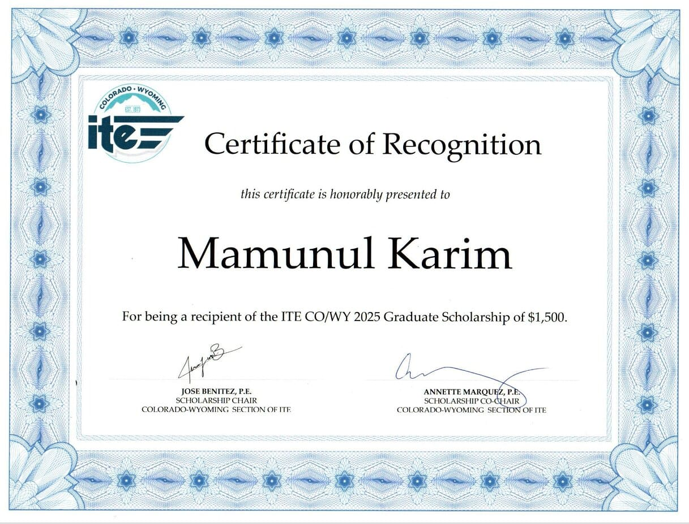
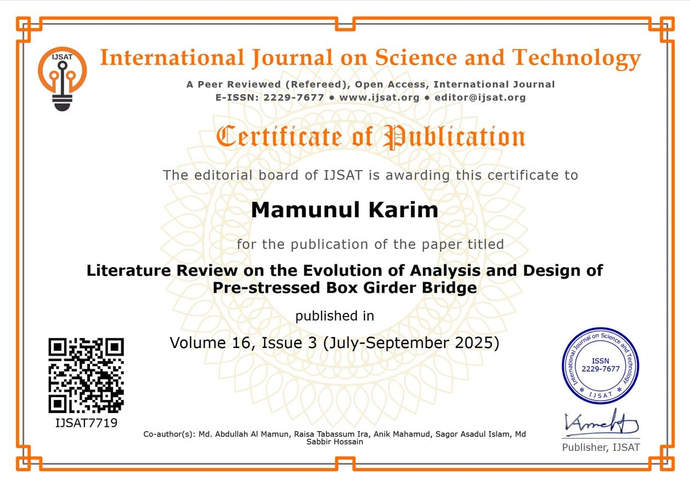
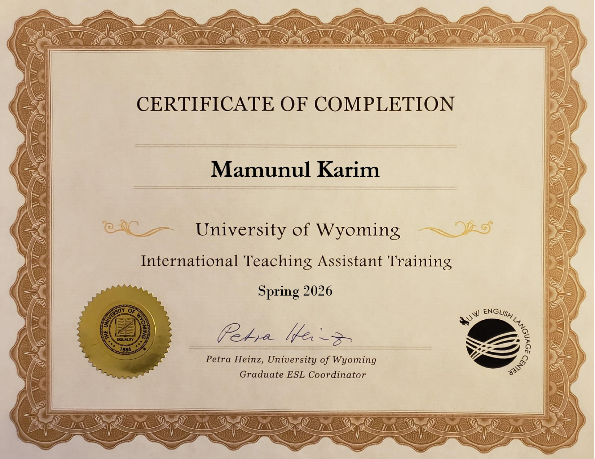
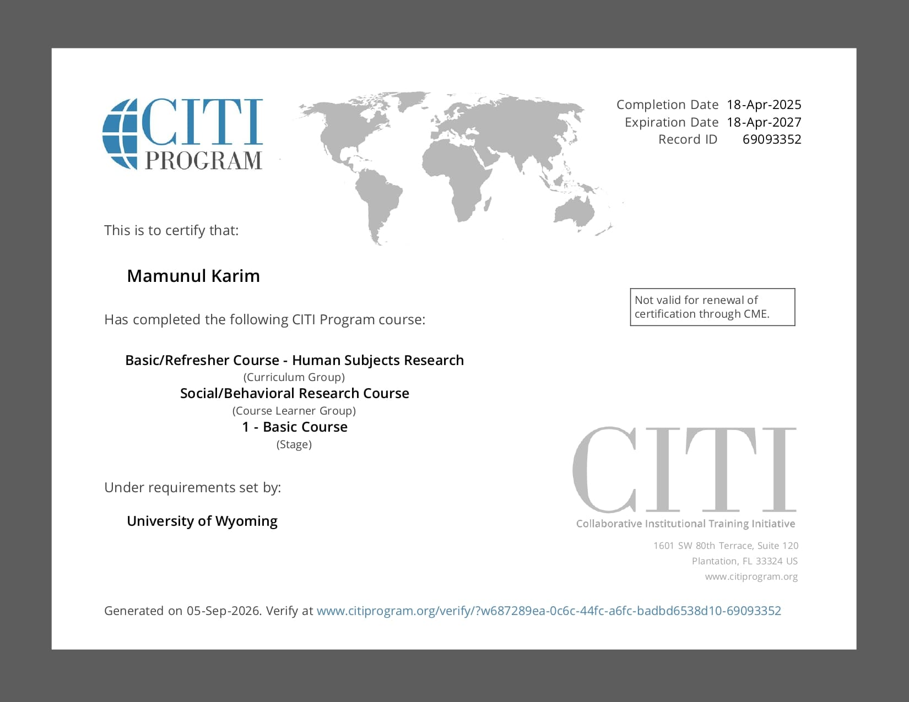
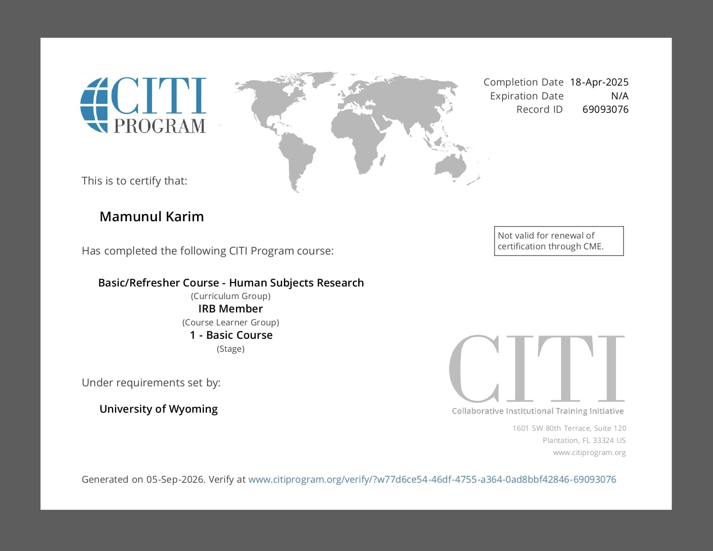
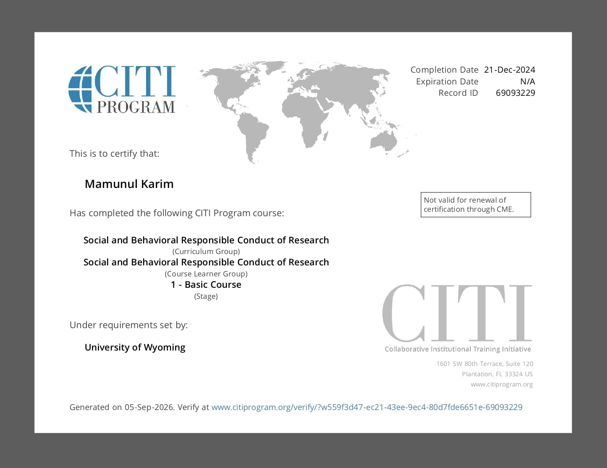
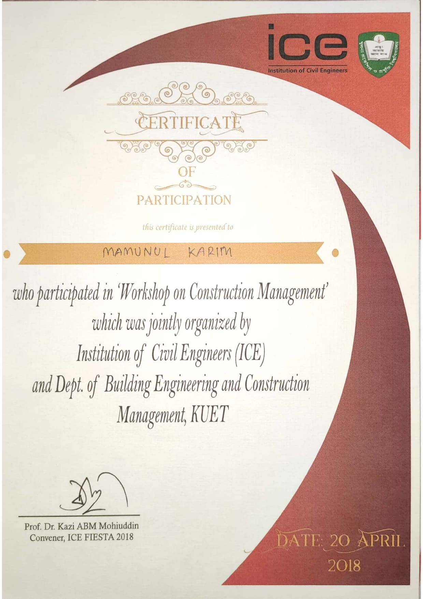
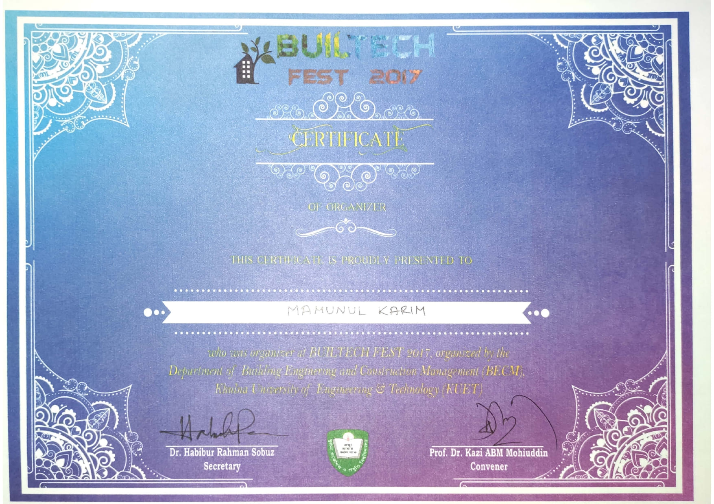
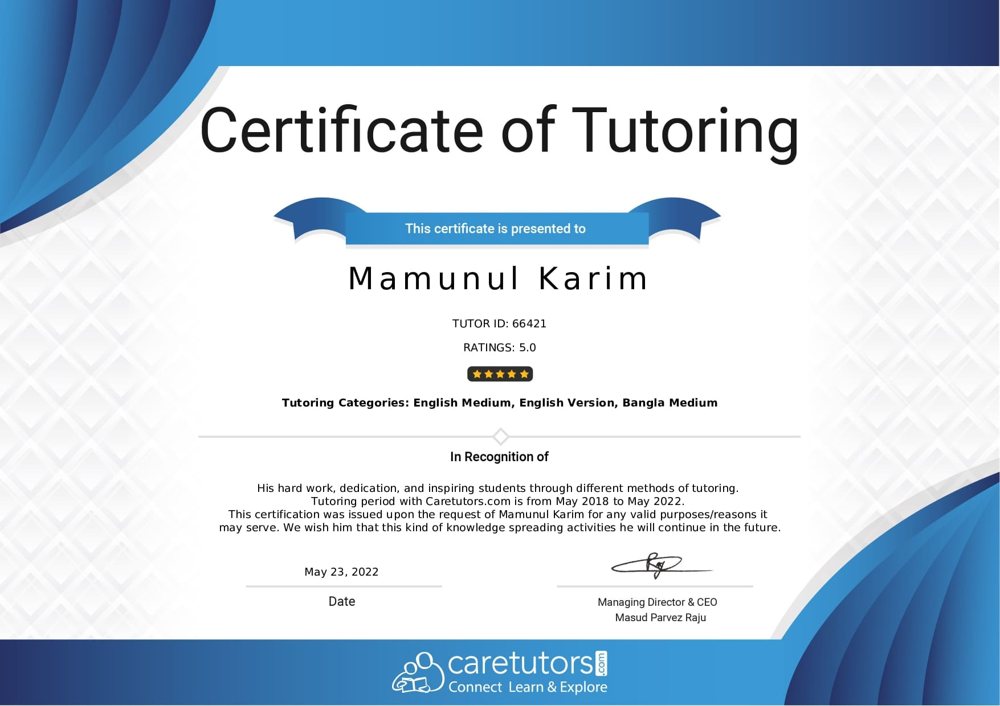

Certificates & awards
Research ethics training, professional development, scholarships, and competition results. Click any certificate to open it full size.
Certificates
{kind=link}

{kind=link}

{kind=link}

{kind=link}

{kind=link}

{kind=link}

{kind=link}

{kind=link}

{kind=link}

Awards & scholarships
- Fulton Fellowship, Arizona State University, for academic research excellence.
- ITE CO/WY Section Graduate Level Scholarship, Colorado–Wyoming Section of ITE, 2025.
- President, ITE Student Chapter, University of Wyoming, 2025 – present.
- International Scholarship, University of Wyoming, for excellence and leadership.
- Four-year Bangladesh Technical Scholarship for sustained academic performance during the BSc program.
- Two-year Bangladesh Government Merit Scholarship for the highest academic grade.
- Champion, poster presentation on green building adaptation in Bangladesh, Builtech Fest, KUET.
- Runner-up, case study competition on construction material detection using YOLOv5, Builtech Fest, KUET.